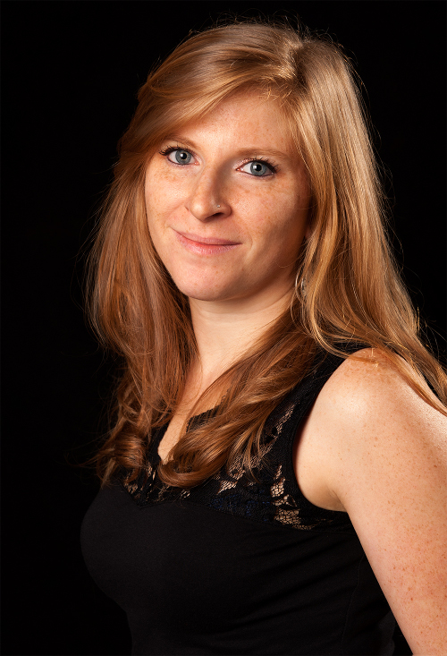
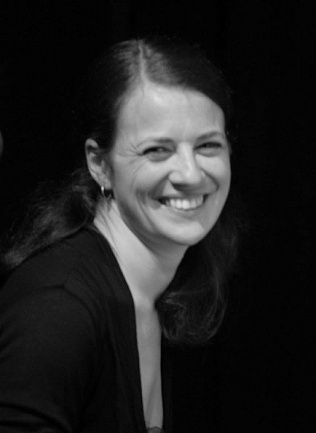

Carole Cantin
Après avoir obtenu son DESM de chant lyrique au Conservatoire National Supérieur de Musique et de Danse de Lyon, elle intègre les Musiciens du Louvre dirigés par M. Minkowski, avec lesquels elle a participé par exemple aux productions de Carmen et de La Belle Hélène.
Depuis 2011, elle est soprano supplémentaire de l’Opéra de Bordeaux et de l’Opéra de Rennes. Elle fait également partie du Chœur Parisien d’Opéra, ainsi que de plusieurs ensembles vocaux de solistes tournés vers la musique contemporaine.
Au cours de la saison 2013-14, elle est la Princesse dans l’Opéra du Chat de F. Albinarrate, et Teffi dans l’Opéra Les Sœurs, d’Elena Sedeleva, donné salle Messiaen à Grenoble.

Anne Varin
Ayant commencé la musique très tôt par le violon, elle a obtenu son DEM de chant lyrique au Conservatoire à Rayonnement Régional de Grenoble.
Elle se produit ensuite avec l'ensemble vocal grenoblois Temps Relatif avec lequel elle participe au Festival Berlioz ou encore au Festival d'Avignon, elle interprète également en 2014 le rôle Belinda dans Didon et Enée de Purcell.
En parallèle de son métier d'enseignante et de chef de chœur, elle a intégré le Choeur Britten dirigé par Nicole Corti, avec lequel elle se produit notamment à l'Auditorium de l'Orchestre National de Lyon.

Charlotte Masse-Navette
Après avoir effectué ses études musicales à Grenoble, elle est entrée dans la classe de piano de Sébastien RISLER et a obtenu un prix de piano et de solfège aux Conservatoires Populaire et Supérieur de Genève.
Egalement titulaire d’une licence de musicologie, elle obtient en 2013 son DEM d’accompagnement au Conservatoire à Rayonnement Départemental de Valence dans la classe de Marie Duinat, ainsi que son DE de piano..A finir
Enseignante en piano et formation musicale à Grenoble, elle est également pianiste du chœur Hélios du CRD de Valence.